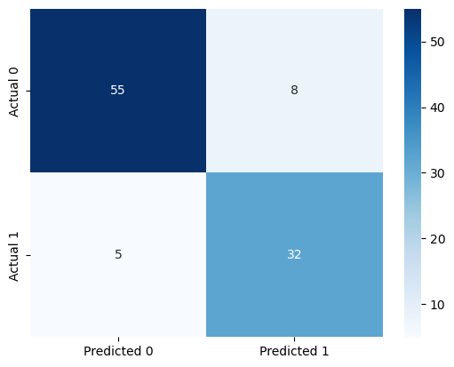

import pandas as pd
import numpy as np
import seaborn as sns
import matplotlib.pyplot as plt
from sklearn.linear_model import Ridge, Lasso, LogisticRegression # No CV versions of the objects
from sklearn.preprocessing import StandardScaler, PolynomialFeatures
from sklearn.metrics import mean_squared_error, mean_absolute_error, accuracy_score, roc_curve, auc, \
precision_score, recall_score, confusion_matrix
from sklearn.model_selection import cross_val_score, cross_val_predict6 Cross-validation
Read section 5.1 of the book before using these notes.
Note that in this course, lecture notes are not sufficient, you must read the book for better understanding. Lecture notes are just implementing the concepts of the book on a dataset, but not explaining the concepts elaborately.
- The aim of the notebook is to introduce how to use some low-level cross-validation tools.
- Why? Because unlike Lasso, Ridge and LogisticRegression, most models in sklearn don’t have a CV version.
- In that case, you need to CV yourself with the tools in this notebook.
6.1 Regression
trainf = pd.read_csv('Datasets/house_feature_train.csv')
trainp = pd.read_csv('Datasets/house_price_train.csv')
testf = pd.read_csv('Datasets/house_feature_test.csv')
testp = pd.read_csv('Datasets/house_price_test.csv')
train = pd.merge(trainf,trainp)
test = pd.merge(testf,testp)
train.head()| house_id | house_age | distance_MRT | number_convenience_stores | latitude | longitude | house_price | |
|---|---|---|---|---|---|---|---|
| 0 | 210 | 5.2 | 390.5684 | 5 | 24.97937 | 121.54245 | 2724.84 |
| 1 | 190 | 35.3 | 616.5735 | 8 | 24.97945 | 121.53642 | 1789.29 |
| 2 | 328 | 15.9 | 1497.7130 | 3 | 24.97003 | 121.51696 | 556.96 |
| 3 | 5 | 7.1 | 2175.0300 | 3 | 24.96305 | 121.51254 | 1030.41 |
| 4 | 412 | 8.1 | 104.8101 | 5 | 24.96674 | 121.54067 | 2756.25 |
# Data
# Train
y_train = np.log(train.house_price) # Response (log taken to account for the skewed dist. of house prices)
X_train = train.iloc[:,1:6] # Slice out the predictors
# Test
y_test = np.log(test.house_price) # Response (log taken to account for the skewed dist. of house prices)
X_test = test.iloc[:,1:6] # Slice out the predictor
# Scale both
scaler = StandardScaler()
scaler.fit(X_train)
X_train_scaled = scaler.transform(X_train)
X_test_scaled = scaler.transform(X_test)# Let's tune the lambda of a Ridge model, with 5-fold CV.
# For that, we need to loop through lambda (alpha) values.
# However, we don't need to loop through folds - we will use a function for that! - cross_val_score
alphas = np.logspace(-1,1,200)
cv_results = []
for alpha in alphas: # For each alpha
model = Ridge(alpha=alpha) # Create the model
cv_results.append(cross_val_score(model, X_train_scaled, y_train, cv=5, scoring='neg_root_mean_squared_error')) # cross validate it
# Note that the input is the model object, the data, number of folds and the metric
# If you don't specify the scoring, it will use r-squared for regression and accuracy for classification
# The output is an array of k values, k being the number of folds (cv input)# For each alpha value, 5 RMSE values
# Take the mean of each row to find avg cv score for each alpha
# Negative sign because the scoring input has "neg" in the previous cell
rmses = -np.array(cv_results).mean(axis=1)
# Index of the minimum CV RMSE
np.argmin(rmses)
alphas[np.argmin(rmses)]
# Note the same alpha as in RidgeCV example in the previous notebook4.768611697714469# Now we need to create one final Ridge model with the optimized alpha value
model = Ridge(alpha=alphas[np.argmin(rmses)])
model.fit(X_train_scaled, y_train)
# Predict
# EvaluateRidge(alpha=4.768611697714469)In a Jupyter environment, please rerun this cell to show the HTML representation or trust the notebook.
On GitHub, the HTML representation is unable to render, please try loading this page with nbviewer.org.
Ridge(alpha=4.768611697714469)
6.2 Classification
# Data
train = pd.read_csv('Datasets/Social_Network_Ads_train.csv')
test = pd.read_csv('Datasets/Social_Network_Ads_test.csv')
# Predictors and response
X_train = train[['Age', 'EstimatedSalary']]
y_train = train['Purchased']
X_test = test[['Age', 'EstimatedSalary']]
y_test = test['Purchased']
# Scale
sc = StandardScaler()
sc.fit(X_train)
X_train_scaled = sc.transform(X_train)
X_test_scaled = sc.transform(X_test)# CV a logistic regression model
# a list of possible C values
Cs = [0.001, 0.01, 0.1, 1, 10, 100]
cv_results = []
for C in Cs:
model = LogisticRegression(penalty='l2', C=C)
cv_results.append(cross_val_score(model, X_train_scaled, y_train, cv=10))
# Scoring not given, default metric is accuracy (you can use recall, precision etc.)# For each C, 10 accuracy values
accs = np.array(cv_results).mean(axis=1)
Cs[np.argmax(accs)] # best C - Same as the output of LogisticRegressionCV in the previous notebook
# Train the final model
# predict
# Evaluate1- Important question: How were these accuracies calculated? With a threhold of 0.5
- What if we want to change/optimize the threshold in this process as well? Then
cross_val_score()is not enough, we need to change the function!
# CV a logistic regression model - but do not return the accuracy metric for each fold
# Return the PREDICTIONS FOR EACH FOLD
# a list of possible C values
Cs = [0.001, 0.01, 0.1, 1, 10, 100, 1000]
cv_results = []
for C in Cs:
model = LogisticRegression(penalty='l2', C=C)
cv_results.append(cross_val_predict(model, X_train_scaled, y_train, cv=10, method='predict_proba'))
# Cross_val_predict function has an optional input: methodthreshold_hyperparam_vals = np.arange(0,1.01,0.01)
C_hyperparam_vals = np.logspace(-3.5, 1)
accuracy_iter = pd.DataFrame(columns = {'threshold':[], 'C':[], 'accuracy':[]})
iter_number = 0
for c_val in C_hyperparam_vals:
predicted_probability = cross_val_predict(LogisticRegression(C = c_val), X_train_scaled,
y_train, cv = 5, method = 'predict_proba')
for threshold_prob in threshold_hyperparam_vals:
predicted_class = predicted_probability[:,1] > threshold_prob
predicted_class = predicted_class.astype(int)
#Computing the accuracy
accuracy = accuracy_score(predicted_class, y_train)*100
accuracy_iter.loc[iter_number, 'threshold'] = threshold_prob
accuracy_iter.loc[iter_number, 'C'] = c_val
accuracy_iter.loc[iter_number, 'accuracy'] = accuracy
iter_number = iter_number + 1# Parameters for highest accuracy
optimal_C = accuracy_iter.sort_values(by = 'accuracy', ascending = False).iloc[0,:]['C']
optimal_threshold = accuracy_iter.sort_values(by = 'accuracy', ascending = False).iloc[0, :]['threshold']
#Optimal decision threshold probability
print("Optimal decision threshold = ", optimal_threshold)
#Optimal C
print("Optimal C = ", optimal_C)Optimal decision threshold = 0.41000000000000003
Optimal C = 0.06250551925273976model = LogisticRegression(C = optimal_C).fit(X_train_scaled, y_train)
test_pred = model.predict_proba(X_test_scaled)[:,1]
y_pred_optimal_threshold = (test_pred > optimal_threshold).astype(int)
#Computing the accuracy
print("Accuracy: ",accuracy_score(y_pred_optimal_threshold, y_test)*100)
#Computing the ROC-AUC
fpr, tpr, auc_thresholds = roc_curve(y_test, y_pred_optimal_threshold)
print("ROC-AUC: ",auc(fpr, tpr))# AUC of ROC
#Computing the precision and recall
print("Precision: ", precision_score(y_test, y_pred_optimal_threshold))
print("Recall: ", recall_score(y_test, y_pred_optimal_threshold))
#Confusion matrix
cm = pd.DataFrame(confusion_matrix(y_test, y_pred_optimal_threshold), columns=['Predicted 0', 'Predicted 1'],
index = ['Actual 0', 'Actual 1'])
sns.heatmap(cm, annot=True, cmap='Blues', fmt='g');Accuracy: 87.0
ROC-AUC: 0.868940368940369
Precision: 0.8
Recall: 0.8648648648648649
- We will use
cross_val_score()andcross_val_predict()repeatedly next quarter. - There is a
cross_validate()function that allows us to use multiple metrics at once (for example, accuracy and recall) - next quarter.
Find some more examples of using the cross validation and some other useful functions here.